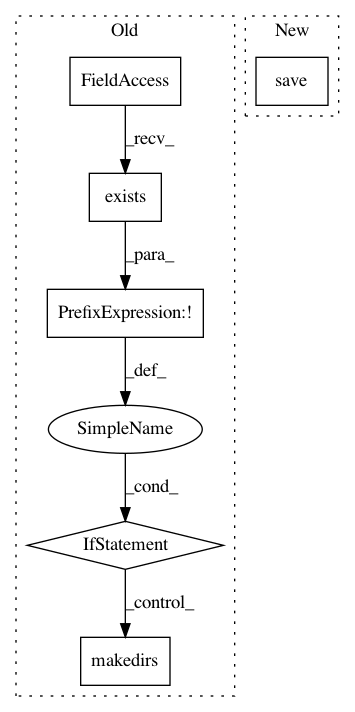

959372edab3020c0164b8a2da4aaff1c49ba8400,example/resnet/convert_resnet_keras.py,,main,#,15
Before Change
args = parser.parse_args()
keras_model_path = path.join(args.out, "resnet50.h5")
if not os.path.exists(keras_model_path):
console.stderr("Exporting Keras model into file")
os.makedirs(args.out, exist_ok=True)
model = resnet50.ResNet50(include_top=True, weights="imagenet")
model.save(keras_model_path)
console.stderr("Converting model into WebDNN format (graph descriptor)")
// only for demo purpose, maybe not safe
convert_keras_command = f"python ../../bin/convert_keras.py {keras_model_path} --input_shape "(1,224,224,3)" --out {args.out}"
if args.encoding:
After Change
graph = KerasConverter(batch_size=1).convert(model)
for backend in ["webgpu", "webassembly", "fallback"]:
graph_exec_data = generate_descriptor(backend, graph, constant_encoder_name=args.encoding)
graph_exec_data.save(args.out)
console.stderr("Done.")
In pattern: SUPERPATTERN
Frequency: 3
Non-data size: 6
Instances
Project Name: mil-tokyo/webdnn
Commit Name: 959372edab3020c0164b8a2da4aaff1c49ba8400
Time: 2017-07-02
Author: y.kikura@gmail.com
File Name: example/resnet/convert_resnet_keras.py
Class Name:
Method Name: main
Project Name: IBM/adversarial-robustness-toolbox
Commit Name: 46b700a1b63488408121f1edf9df3df01d345a17
Time: 2019-02-21
Author: M.N.Tran@ibm.com
File Name: art/classifiers/detector_classifier.py
Class Name: DetectorClassifier
Method Name: save
Project Name: moskomule/senet.pytorch
Commit Name: 60f86864a6da5a746f9ae51f73ccfdeb29e6b35f
Time: 2018-03-06
Author: hataya@keio.jp
File Name: utils.py
Class Name: Trainer
Method Name: save